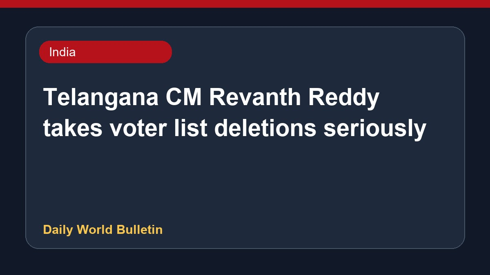

Telangana CM Revanth Reddy takes voter list deletions seriously

Telangana Chief Minister Revanth Reddy has expressed serious concern over the deletion of lakhs of voters during the SIR exercise, stating that a vote is more valuable than gold. Hyderabad authorities are set to issue notices to nearly 5.82 lakh unmapped voters. Meanwhile, the Chief Minister emphasized that communities like Hindus and Muslims are regarded as two eyes, and the state government is making continuous efforts to ensure equal benefits for Muslim citizens.
Original source: India News Sources
CM Revanth Reddy Takes SIR Deletions Very Seriously! - Gulte ↗
CM Revanth Reddy Takes SIR Deletions Very Seriously! - Gulte ↗